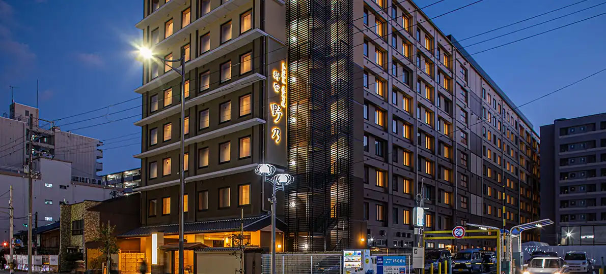
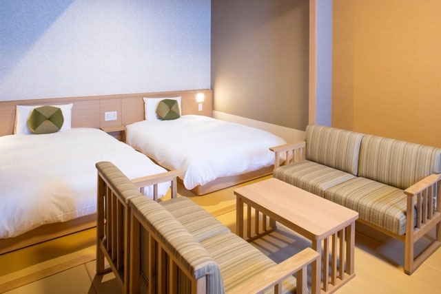
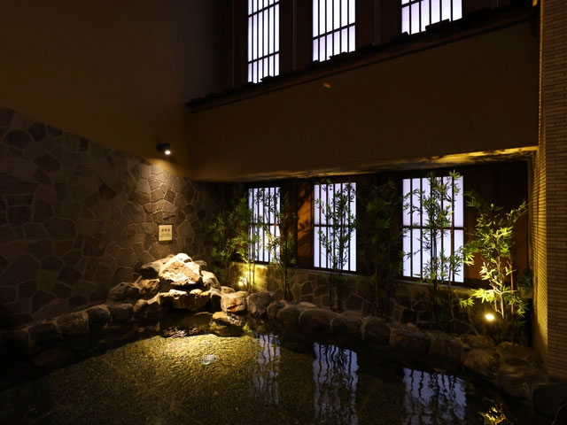
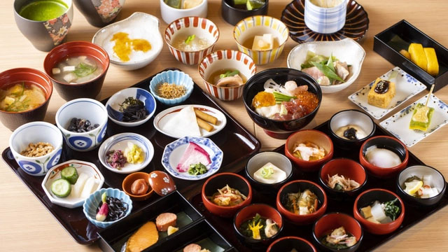
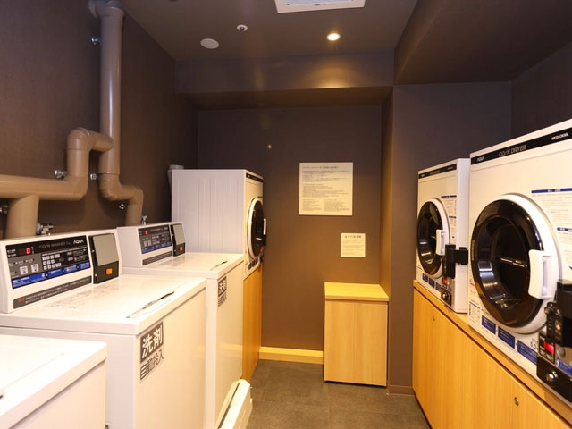

가족과 선수가 함께하는 완벽한 여행
짐 이동 없는 완벽한 베이스캠프, 3성급 대욕장 리커버리를 갖춘 실속형 프리미엄 투어
티웨이항공
08:00 출국 / 20:30 귀국
온야도 노노 교토 시치조 내추럴 핫 스프링
짐 이동 없는 3연박
레이스 후 피로를 씻는
천연 온천욕 완비
오영환 마스터 코치
러너와 가족 맞춤형 동행
컨디션 관리에 집중할 수 있도록, 짐 이동 없는 최상위 등급 3연박이 준비되어 있습니다.





교토역 도보 7분 거리의 프리미엄 온천 호텔입니다. 전관 다다미 바닥으로 맨발의 편안함을 선사하며, 천연 온천 대욕장 '연화의 탕'에서 마라톤 후 완벽한 냉온욕 리커버리를 경험할 수 있습니다.
호텔 객실 및 부대시설 둘러보기 →각 일자별 일정과 지도를 한눈에 순서대로 확인할 수 있습니다.
안전하고 즐거운 투어를 위해 꼭 알아두셔야 할 필수 정보입니다.